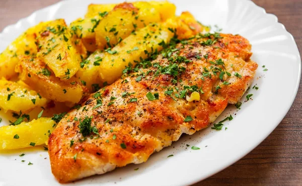

Receitas em destaque
Omelete de queijo com tomate
Uma refeição rápida e nutritiva, ideal para qualquer hora do dia. Basta bater os ovos, adicionar queijo e tomate picado, e cozinhar na frigideira até ficar macio.

Frango grelhado com batata
Uma refeição completa e versátil. Prepare o frango grelhado com temperos a gosto, acompanhado de batatas crocantes assadas. Saudável e saboroso.

Strogonoff de Frango
Um prato delicioso e reconfortante, feito com tiras de frango, molho de tomate, cogumelos e um toque de creme de leite. Fácil de preparar, rápido e delicioso.